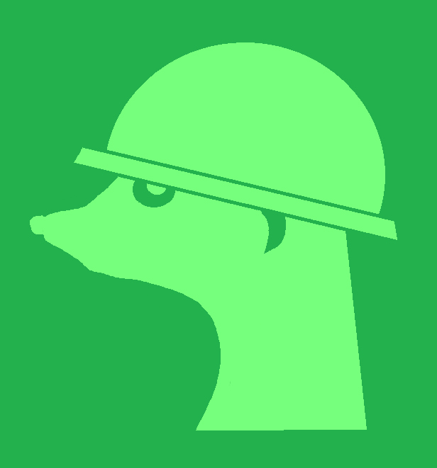

Rainforest Trust
Planned donation goal
$3,000
PROJECTON THE LOOKOUT FOR A WILDER WORLD
Good design. A greater purpose. Wildlife-inspired tees and hoodies that put conservation in the picture.
Made for animal people.
And people who want to make a difference.
01 / THE COLLECTION
Meet the first concepts from our wildlife-inspired lineup. Graphic tees and hoodies, with a story behind every species.
Concept illustrations only. Stripe test cart supports all six concepts, sizes and quantities. No real sales or shipments.
02 / MORE THAN A NAME
Meerkats look out for each other. While the group forages, a dedicated lookout stays alert.
That's the idea behind Project Suricate: a creative label with a watchful eye on wildlife. We bring artists, designers, and animal lovers together to turn everyday clothing into support for conservation.
See what we're working toward ↗03 / THE BIG PICTURE
Our goal is to raise and donate $10,000 across four conservation organizations. These are planned donation recipients, not claimed partners or endorsements.
of net profits pledged to conservation
planned conservation recipients
total donation goal — not funds raised
Planned donation goal
$3,000Planned donation goal
$3,000Planned donation goal
$2,000Planned donation goal
$2,00004 / NO GUESSWORK
Our commitment is based on net profit, not the full purchase price. We plan to share revenue, costs, net profit, and donation records so you can see where the money goes.
Half of net profit — what remains after business costs — is allocated to conservation donations. It does not mean half of every sale is donated.
No donation total is presented here. $10,000 is our planned donation goal. Verified totals and receipts will be shared when reports are published.
Regular public financial reporting is part of our plan. The publication schedule is being finalized; reports will be linked here when available.
Real sales are not available. Use the Stripe test cart to try multiple designs, sizes and quantities without placing a real order.